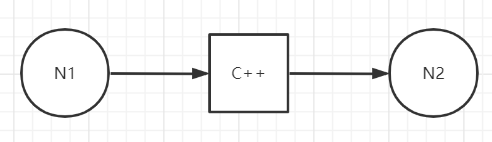
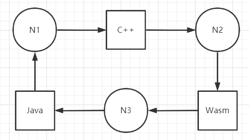
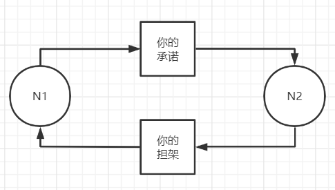

——读《现代操作系统》有感
前言
大约，本人是没什么资格谈论这些话题的。
事实上，无论是个人，还是周围熟悉的，都没有那些如小说般特别的情感经历。故事中令人床上打滚的经典桥段，固然是基于现实，但明显要超越现实。
我阅读过的文学作品非常少，其中又有大部分的快餐文学。它们一般都有帅气的男主角 / 美丽的女主角 / 搞砸事情的配角 / 万恶的反派角色，主角们一开始会有一些曲折，后面会有一系列难关，最后还会经历之前无法想象的困难，最后达到 happy-ending。大体套路如此，不同的只是世界观、角色选型、任务分配，看多了会觉得无聊。相同的是它们对感情的描述雁过不留痕，看了也没有什么大的波澜。当然，我也看过一些反套路剧情，不过这种 “反套路” 慢慢地又变成了一种新的 “套路”。
比较而言，悲剧会是一种不错的选择。可惜我接受不了 “浓缩的悲剧”，我的小心脏承受不了特别悲情的片段。如果是文字，我会跳过；如果是视频，我会快进。能承受的最大限度大约是每日播报的新闻。
尽管如此，有如此心理和阅读经历的我，也不会把自己代入到一些理想的故事当中。
因为那都太假了，假到让人没有代入感。不少作者或许也知道自己写的东西不值得让读者共情，于是他们更加肆无忌惮地夸大感情的坚韧，并用玄学解释事实。他们相信：“经典之所以被称之为经典，是因为剧情容错性高。” 作者们如表演魔术一样，变着法地打磨自己的文字，于是我看到了一系列主线剧情相似的小说。
在这些 “经典” 中，男主角和女主角的感情，自然是不可或缺的一条线索。写好感情线的作者，远远高出其余作者一个层次。我想，如果我去写小说的话，一定属于 “不会写感情线” 的那批作者。原因很简单：
大约，本人是没什么资格谈论这些话题的。
那些作者受人追捧的原因，想来是 “它们对于某些事情有独到且合理的见解”。这种见解可能是超越时代的，也有可能是当前时代大部分人公认的。作者借虚拟出来的人物传达了自己的这些想法，并且足够精彩，那就是值得称赞的了。
如果我要写点东西的话，首先肯定离不开个人的经历，其次是我了解过的内容，最后是道听途说的故事。
爱，延迟与通信死锁
——读 “第 6 章-死锁” 有感
随着年龄的增长，我彷佛能够感受到 “理想感情” 的奢侈。
如果把每个人都当作一个节点 $N$，按照 第六次人口普查 的数据来看，中国有节点 $1370536875$ 个。我暂时站在上帝视角，自然是可以拥有一个函数 $f$，该函数可以定义为：
1 | func MatchDegreeCalcu(N_i People, N_j People) float64 |
假使 $\forall N_i \in China, \exists N_j \in China,\ st.\ d_p = \min{f(N_i, N_j)}$。每个人都像是一台机器，机器上的一个进程可以多播消息给周围节点。消息的 TTL 需要根据 一个人对集群的影响力 来标定。无论影响力多么强大，也有传不到的地方。只要消息不遍及集群中所有节点，就谈不上 $100\%$ 的把握。
纵使节点茫茫，还是应该要乐观一些。可即使找到了，面临的问题也无法让人积极解决。
三角恋
1 | type People struct { |
正常来讲，我们很难说一个人就是喜欢另外一个人的所有。$N_j$ 绝对是具备某些属性 $a_1, a_2, a_3…$ 才被 $N_i$ 瞧上的。
可以用下面这个方式来表示 “节点 $N_1$ 看中了会写 C++ 的节点 $N_2$”：

- 对于符号：
- 圆圈 表示节点；
- 方形 表示节点拥有的属性。
- 对于关系：
- 圆圈指向方形 表示 某节点中意某属性；
- 方形指向圆圈 表示 某节点拥有某属性。
完整的情况如下图所示：

按道理说，三个人在现实生活当中基本不可能出现上述的三角，举这样的例子确实牵强了。
互相暗恋
小时候看综艺节目，有时候会邀请一对明星夫妻做嘉宾。“谁先追的谁” 这个问题可能会迟到，但永不会缺席。一提到这个话题，或许会有一方首先发言，拍着胸脯说：
“是 Ta 先追的我。”
这样回答就能凸显自己 “优秀”、“具有吸引力”，甚至还夹带着一点 “我吃亏了” 的意味。
但我完全不这么看。先追的人有十足的勇气，不管之前做了多少心理准备（也可能一点都没做），也不管之前请兄弟姐妹支了多少花招（可能全靠个人实力），“先发制人” 始终需要勇气。而被追的那个，只能说明 “有眼无珠” 罢了。
如果这两个人当初还是 “互相暗恋” 的关系，那被追的那个人就更好笑了。“胆小懦弱”、“没有决心”、“不够热爱” 这些都是表象，都可以归结为 “患得患失”。
保持现在的关系就好了
吊着就行
现在不也挺好吗
如果能一直这样也不错
我相信这个 “互相暗恋” 相较于上面的 “完美三角恋”，要广泛得多：

- 节点 $N_i$ 通常向节点 $N_j$ 发送一些确认信息；
- $N_j$ 收到了；
- 但 $N_j$ 觉得这个确认信息不能够让自己完全确认对方的态度，小心斟酌后回复了 $N_i$；
- 可惜的是，$N_i$ 也这么想；
- 于是尬住了。
看起来只要打破平衡就成了，无论是 $N_j$ 还是 $N_i$，它们俩都可以腆着脸重申自己的消息，但是两个节点就在那里尬着。如果没有一方做出点 “牺牲”，“互相暗恋” 的结局就一种，双方无法接受在一条已经阻塞的逻辑上空耗资源，一方中断通信，这件事被迫不了了之。
并且根据我个人经历，能陷入这种情况下的男方大脑，始终在情感处理方面始终有些故障。这个故障体现在很多方面：
- 两个人完全不像处在同一时代（时钟漂移率太高了）
- 两个人说话方式不一样，经常说错话（随机故障）
- 其中一方事情太多，处理不过来，甚至一晚上不回消息（负载过高导致处理能力降低，服务直接崩了）
- 就是不喜欢看通讯软件（高延迟）
高延迟
这是很有意思的。
A — 2021.4.25 23:59:56
还有 4 秒钟你就过生日了！
B — 2021.4.25 23:59:57
嗯嗯！
A — 2021.4.26 00:00:00
生日快乐！
A — 2021.4.26 00:01:00
人呢？
A — 2021.4.26 00:02:00
在吗？
B — 2021.4.26 02:00:00
抱歉抱歉，刚才我睡着了。
正处于热恋中的情侣，聊着聊着，突然对面不回复了。一方肯定焦急地等待着。
两个人物理距离比较近的时候，可以通过对方的眼神、举止、他人的评论、自己的感受等多方面因素更新内存中有关对方的状态。鉴于双方物理距离过远，当面确认状态 是不可能的，同时在午夜致电多少是一种不好的行为，双方实际上没有 除保持文字通信之外的其他办法 了解对方的一举一动。（当然了，文字通信也是不可靠的，即使我们假设对方不会说谎，但由于消息的传输需要时间，消息传到时，另一方的情况可能早已发生变化）
因此，我们发现一件异地恋不敢承认的事——“你没有任何手段确认对方是否 $X$。”（$X$ 为任意事件）
正常人不需要考虑这些事。正常人哪怕没有收到消息，也绝不会一直盯着手机。看一眼没回，再看一眼还是没回，那只好给 对方的不回复行为 想象一些原因出来。毕竟自己的生活也不是只有对方，大晚上的要睡觉了，还得洗洗脸刷刷牙什么的。
不过一次两次还算好，这种 高延迟 次数一旦多了，受害者难免怀疑另一方的态度。只要节点 $N_i$ 不再信任节点 $N_j$ 了，就什么都晚了。
大概是这样。
被每一个进程独占的CPU
——读 “第 2 章-进程与线程” 有感
心，缓存与第n+1次机会
——读 “第 3 章-内存管理” 有感
炽热、遥远的爱情传说
——读 “第 8 章-多处理机系统” 有感